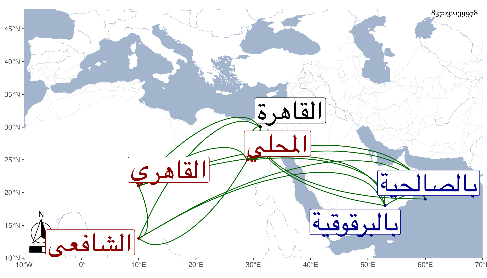

0902Sakhawi.DawLamic.ITO20230111-ara1.EIS1600.837032139978
Biography ID: 837032139978
258
محمد بن أحمد بن يوسف بن محمد بن أحمد أوحد الدين بن الشهاب أبي العباس المحلي الأصل القاهري الشافعي الماضي أبوه وولده الجلال عبد الرحمن ويعرف بابن السيرجي . ولد في عاشر شعبان سنة خمس عشرة وثمانمائة بالقاهرة وأخذ عن أبيه وغيره وجود الخط وتميز في الفرائض والحساب وبرع في التوقيع وتكسب بذلك وراج أمره فيه وناب في القضاء عن المناوي فمن بعده وامتنع من قبوله عن الأسيوطي وكان قد استقر في التصدير الذي قرره فيروز الناصري بجامع الأزهر برغبة والده له عنه وعمل فيه إجلاسا بحضرة شيخنا وغيره من الأعيان وكذا رغب له أبوه عن تدريس الطوغانية واستقر في الخطابة بالمنجكية عوضا عن الشهاب بن صالح وفي الشهادة بالكسوة برغبة الشرف بن العطار وبالبرقوقية وغيرها وخطب أيضا بالصالحية ، وكان جهوري الصوت مقداما . مات فجأة في سادس عشر ذي القعدة سنة سبع وسبعين وهو بالبرقوقية فحمل لبيته وصلى عليه من الغد ثم دفن بتربة أبيه بالباب الجديد عفا الله عنه .
